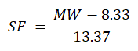
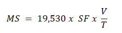
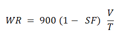

Determine the mass of solids (for an unweighted mud) and the volume of water discarded by one cone of a
hydrocyclone (desander or desilter)
Volume fraction of solids (SF):

Mass rate of solids (MS):

Volume rate of water (WR)

Where,
SF = fraction percentage of solids
MW = average density of discarded mud (ppg)
MS = mass rate of solids removed by one cone of a hydrocyclone (lb/hr)
V = volume of slurry sample collected (quarts)
T = time to collect slurry sample (seconds)
WR = volume of water ejected by one cone of a hydrocyclone (gal/hr)